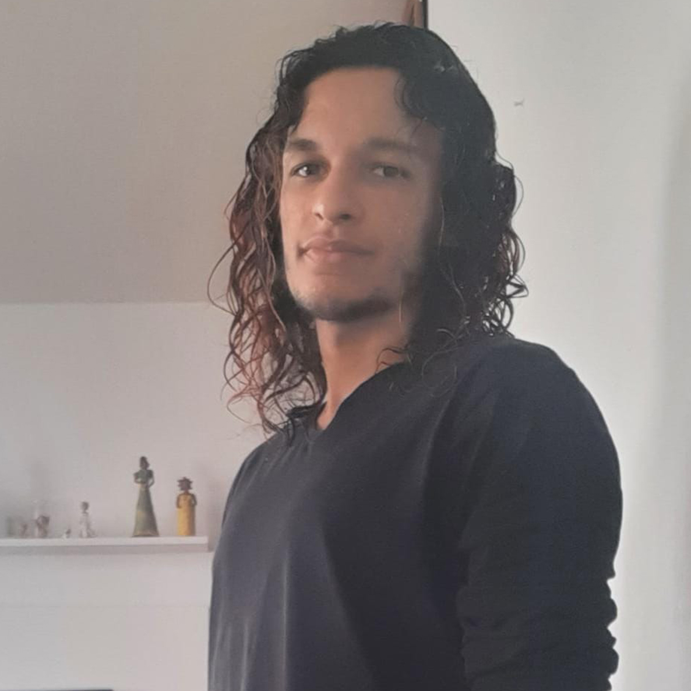

Kelvin Moreira
Estudante de Ciência da Computação da faculdade Unijorge, um futuro desenvolvedor backend que almeja trabalhar com o desenvolvimento de jogos e possui grande interesse em linguagens como C#.

Marcos Henrique
Estudando Ciência da Computação na UniJorge (Universidade Jorge Amado), possui um grande interesse na área de UI/UX, sendo o designer do grupo. Front-end é a sua área preferida da tecnologia.

William Araújo
Estudante aspirante à especialista em inteligência artificial, automação e robótica, possuindo, ademais, a pretensão de atuação no cenário da dublagem